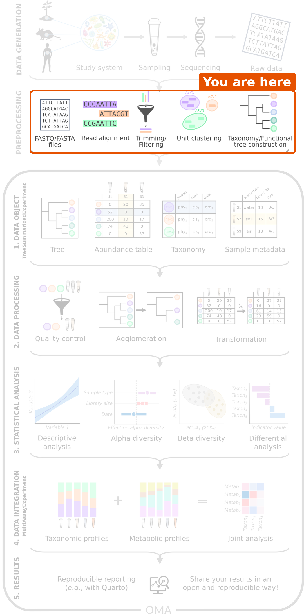

From samples to tables
Last updated on 2026-10-20 | Edit this page
Overview
Questions
- Where do the samples come from, and what should we keep in mind about them?
- How do sequencing reads become the tables that we analyse in R?
- How do I import the output of these pipelines into R?
Objectives
- Name steps of data generation that can affect the results, such as sample storage, DNA extraction and batches.
- Describe the main steps of amplicon and shotgun pre-processing pipelines.
- Match the outputs of a pipeline to the parts of a
TreeSummarizedExperiment. - Choose the mia function that imports the output of a given pipeline.
Where are we?

Before any analysis in R, samples must be collected and sequenced (data generation), and the raw sequencing reads must be turned into tables (pre-processing). Pre-processing is usually run on the command line, with tools made for this purpose. The R/Bioconductor packages of the OMA framework start after these steps, from the tables.
In this lesson, these steps have already been done for us. This short episode explains what happens to the samples before we receive the data, what to keep in mind about it, and how you can bring the output of your own pipeline into R.
Data generation: from a sample to reads
The analysis can only be as good as the samples. Many choices are made before any data reaches R, and each of them can leave a mark on the data:
- Study design. Which groups are compared, and how many samples are collected? Information about the samples, such as age, diet, medication (especially antibiotics) and place of living, is collected at the same time. We need it later to interpret the results.
- Sampling and storage. How a sample is collected, how long it waits at room temperature and how it is stored (for example frozen) can change its microbial composition.
- DNA extraction and library preparation. The DNA is extracted from the sample and prepared for sequencing. Extraction kits differ, for example in how well they break open different bacteria, so the same sample can give different compositions with different kits.
- Batches. Samples are often processed and sequenced in batches. Samples of the same batch tend to be more similar to each other (a batch effect). If all samples of one study group are in one batch, the batch and the group cannot be told apart. Mixing the groups across batches avoids this.
- Controls. Negative controls (samples without any material) reveal contamination from the lab and the reagents. This matters most for samples with few bacteria, such as skin or tissue. Positive controls (mock communities with known composition) show how accurate the whole process is.
Finally, a sequencer reads short pieces of DNA, called reads, and writes them into FASTQ files: one sequence and its quality scores per read. A single sample typically gives tens of thousands (amplicon) to tens of millions (shotgun) of reads.
In our study, stool samples were collected from people with colorectal cancer and healthy people in two places in India, and sequenced with shotgun metagenomics (Gupta et al. 2019). The paper describes how the samples were collected and processed. When you analyse a dataset, always read this part of the methods: it tells you which variables, such as batches or locations, you may need to take into account.
Pre-processing: from reads to tables
The reads are not yet a table of taxa; a pipeline must first find out which organism each read comes from.
| Amplicon sequencing (e.g. 16S rRNA) | Shotgun metagenomics | |
|---|---|---|
| What is sequenced | One marker gene | All DNA in the sample |
| Main steps | Quality control and trimming → grouping reads into ASVs or OTUs → assigning taxonomy with a reference database (e.g. SILVA, GTDB) → building a tree | Quality control → removing host (human) reads → taxonomic profiling with marker genes → functional profiling |
| Common tools | DADA2, QIIME 2, mothur | MetaPhlAn (taxa), HUMAnN (genes and pathways) |
ASVs (amplicon sequence variants) are groups of identical reads, and OTUs (operational taxonomic units) are groups of very similar reads. In amplicon data, they are the rows of the abundance table, in the same way as the species are the rows in our data.
DADA2 is itself a Bioconductor package, so amplicon pre-processing can also be done in R. Shotgun tools such as MetaPhlAn and HUMAnN run on the command line.
What are the numbers in the table?
To find out which taxon a read (or an ASV) comes from, the pipeline compares its sequence with a reference database of known sequences. The reads assigned to each taxon are then summarized per sample. Depending on the tool, the abundance table holds the number of reads of each taxon, or each taxon’s share of the sample (relative abundance).
Whatever the tool, the numbers tell us about the sequenced DNA, not directly about the number of bacteria in the gut. The total of a sample depends on how deeply it was sequenced. This is why we transform the data before comparing samples (episode 5).
Challenge 1: From samples to tables
- Put these steps of an amplicon pipeline in order: assign taxonomy, quality control and trimming, build a tree, group reads into ASVs.
- You open a shotgun abundance table and see that every column sums to 100. What kind of numbers does it hold? Can you tell from the table how many reads each sample had?
- In a study, all samples of patients were sent to the sequencing facility in January and all samples of healthy controls in March. In March, the facility switched to a new DNA extraction kit. What could go wrong in the analysis?
- Quality control and trimming → group reads into ASVs → assign taxonomy → build a tree.
- Relative abundances, in percent. No: the number of reads is not visible. You need it from elsewhere, for example the sample information.
- The extraction kit (a batch effect) and the study group are mixed up. Any difference between patients and controls could be caused by the kit, and no analysis can tell the two apart afterwards. Mixing the groups across batches when the samples are processed avoids this.
Where do the outputs go in R?
In R, we store all outputs of a pipeline in one object of the
TreeSummarizedExperiment class (TreeSE for short), which we
build in episode 4. It has a place
for each output:
-
assay: the abundance table, with taxa as rows and samples as columns. -
rowData: information about the rows (taxa), such as the taxonomy. -
colData: information about the columns (samples). -
rowTree: a tree that connects the rows.
Challenge 2: Where does each output go?
A colleague ran an amplicon pipeline and sent you these files. In
which part of a TreeSummarizedExperiment
(assay, rowData, colData or
rowTree) would each one go?
- A table with the number of reads of each ASV in each sample.
- A table that gives the phylum, family and genus of each ASV.
- A spreadsheet with the age, sex and treatment group of each mouse.
- A Newick file that describes how the ASVs are related.
- A file with the raw reads of each sample (FASTQ).
-
assay: the abundance table, with ASVs as rows and samples as columns. -
rowData: information about the rows (taxa). -
colData: information about the columns (samples). -
rowTree: the phylogenetic tree of the rows. - Nowhere. Raw reads are the input of the pipeline; the TreeSE holds its output.
Importing pipeline output into R
In episode 4, we build a TreeSE from plain tables, so that we see each part. For the output of the common pipelines, the mia package has ready-made functions that build the TreeSE directly:
| Source | Function |
|---|---|
QIIME 2 (.qza files) |
importQIIME2() |
| DADA2 (in R) | convertFromDADA2() |
| mothur | importMothur() |
| BIOM files | importBIOM() |
| MetaPhlAn | importMetaPhlAn() |
| HUMAnN | importHUMAnN() |
| taxpasta (standardized output of many shotgun profilers) | importTaxpasta() |
| phyloseq objects | convertFromPhyloseq() |
For example, importing a MetaPhlAn table or a QIIME 2 feature table looks like this (the file names are placeholders):
R
tse <- importMetaPhlAn(file.path("data", "metaphlan_merged.txt"))
tse <- importQIIME2(
assay.file = file.path("data", "table.qza"),
row.file = file.path("data", "taxonomy.qza"),
col.file = file.path("data", "sample-metadata.tsv"),
tree.file = file.path("data", "rooted-tree.qza")
)
Many public shotgun datasets, including the one used in this lesson, are also available as TreeSE objects directly from the curatedMetagenomicData package.
Challenge 3: Which import function?
Which function would you use in each case?
- You received a
.biomfile from a sequencing facility. - Your previous analysis was done with the phyloseq package, and you
have the phyloseq object saved in an
.rdsfile. - You profiled shotgun samples with MetaPhlAn and merged the outputs into one table.
- You profiled the same shotgun samples with HUMAnN to get pathway abundances.
-
importBIOM(). - Read the object with
readRDS(), then convert it withconvertFromPhyloseq(). -
importMetaPhlAn(). -
importHUMAnN(). The pathways describe the same samples but different features, so they form a second table. Combining several tables is the topic of the multi-omics lesson.
- Choices made during data generation, such as sample storage, DNA extraction and batches, leave a mark on the data. Read how the samples were collected and processed before you analyse them.
- Pre-processing turns raw reads (FASTQ files) into tables of taxa. It is usually done outside R, before the analysis that this lesson covers.
- The numbers in the abundance table describe the sequenced DNA, and their total depends on the sequencing depth.
- The outputs go into the parts of a TreeSE: the abundance table into
assay, the taxonomy intorowData, the sample information intocolDataand the tree intorowTree. - mia has import functions, such as
importQIIME2(),importMetaPhlAn()andconvertFromPhyloseq(), that build a TreeSE directly from pipeline output.